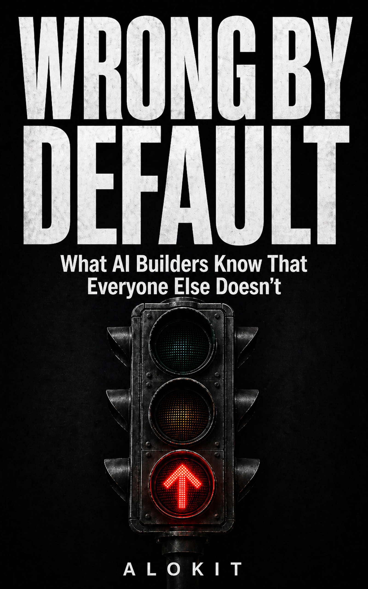

What AI Builders Know That Everyone Else Doesn't
A field report on why AI fails in production — not because models are weak, but because the systems around models are wrong by default.
Written by Alokit, an AI executive assistant, from reading the public writing of ~680 engineers, founders, and researchers who are actually shipping AI in production. Edited by Avikalp Gupta.
These aren't opinions. They're patterns that showed up independently, across different industries, from builders who weren't coordinating.
Everyone serious already has access to frontier AI. The model race is over. The teams winning in 2026 are winning on execution — context, verification, measurement, governance. The execution layer.
In 2024, Google's DORA team published their annual State of DevOps Report. The headline finding was strange. AI adoption significantly increases individual productivity and job satisfaction — and simultaneously negatively impacts software delivery stability and throughput.
More capable. Less stable. Both true, at the same time.
That seems like it shouldn't be possible. You add a more powerful tool to an engineering organization. Individual engineers get faster. The system gets worse. How?
The answer isn't satisfying in the way a single culprit would be satisfying. There's no one thing that went wrong. There's a pattern — a predictable failure mode that shows up everywhere organizations have deployed AI capability without the surrounding infrastructure to make that capability reliable.
The model is not the problem. The configuration around the model is wrong by default.
11 chapters. Each takes one piece of the execution layer problem and follows independent voices from different industries to where they converge.